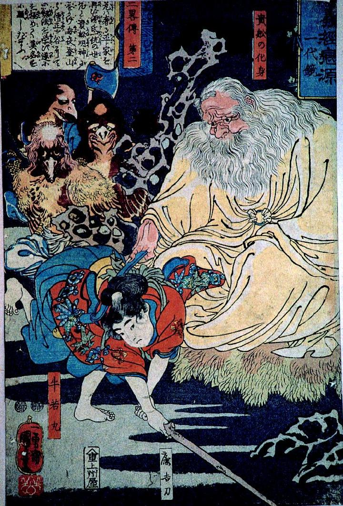

天狗；テング

貴船の化身のもとで剣術修行に励む牛若丸。化身は大柄で白い衣をまとっている。後ろでは3体の天狗が見守っている。みな嘴のはえた烏天狗である。
著作者：歌川国芳／出典：親書誌：A5_pushkin_0005：程義経恋源氏一代鏡；ホドヨシツネコイノゲンジイチダイカガミ／日付：2011／資源識別子：A5_pushkin_0005_0001_0000
Copyright (c)2010- International Research Center for Japanese Studies, Kyoto, Japan. All rights reserved.